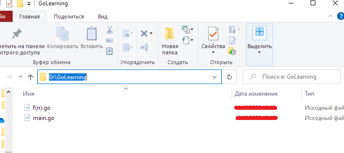
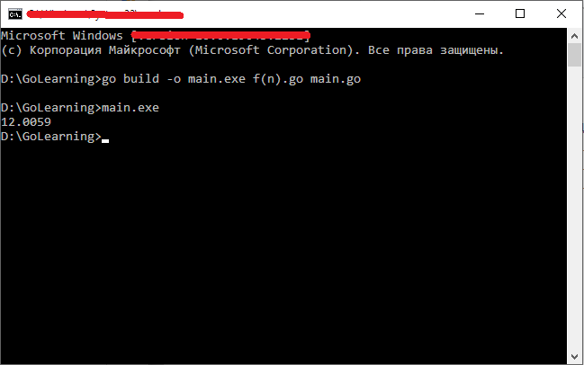
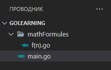
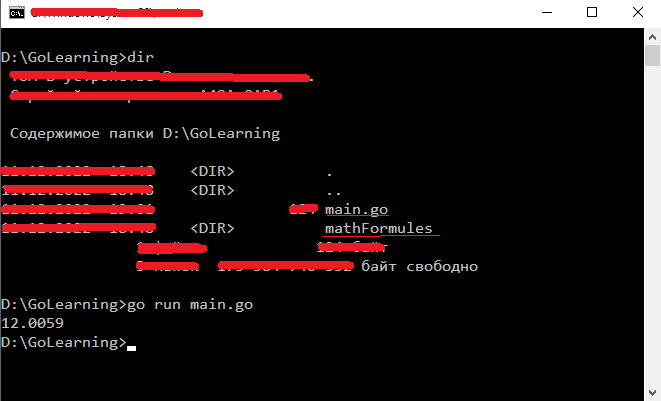

Пакеты
Пакет Go состоит из Go-файлов, расположенных в одной и той же директории, в начале которых имеется одинаковое выражение package. Пакеты, подключаемые к программам, позволяют расширять их возможности. Некоторые пакеты входят в состав стандартной библиотеки Go. А это значит, что они, если вы пользуетесь Go, уже у вас установлены.
Код пакета располагается в одном или нескольких файлах с расширением go. Для определения пакета применяется ключевое слово package. Например:
package main
import "fmt"
func main() {
fmt.Println("Hello there")
}
В данном примере пакет называется main. Определение пакета должно идти в начале файла.
Существеют два типа пакетов: исполняемые - executable и библиотеки reusable. Для создания исполняемых файлов пакет должен иметь имя main. Все остальные пакеты не являются исполняемыми. При этом пакет main должен содержать функцию main, которая является входной точкой в приложение.
Импорт пакетов
Для использования уже готовых пакетов мы используем оператор import. Например, в примере мы подключили пакет "fmt", в котором есть функции Print(), Printf(), Println(), Scan() и т.д. Соответственно чтобы использовать эти функции, необходимо импортировать пакет fmt:
import "fmt"
Нередко программы подключают (а в основном так и делают) сразу несколько пакетов. В этом случае можно импортировать каждый пакет:
import "fmt"
import "bufio"
import "math"
Однако запись в таком виде очень громоздка, поэтому существет возможность сокращенного импорта пактов:
import (
"fmt"
"bufio"
"math"
)
Подключение пакетов значительно расширяет функциональность и возможность кода в Go. Так, например, пакет "math" предоставляет большую возможность в написании (интерпретировании) математических формул. Например, следующая мат. формула:
Будет выглядеть следующим образом:
func f(n float64) float64 {
formulaP1 := math.Sqrt(math.Pow(n, 5) + 4*math.Pow(n, 2) + 2)
formulaP2 := math.Pow(math.Pi, 2)/2 * math.Pow(math.Log2(n), 2)
return formulaP1 + formulaP2
}
Первая часть (formulaP1) —
Вторая часть (formulaP2) —
Полный список встроенных пакетов в Go можно найти по тут.
Пакет из нескольких файлов.
Как уже писалось ранее, один пакет может состоять из нескольких фалов. Давайте протестируем пример выше, но функцию, которую мы написали (f(n)) будет в другом файле:

Т.е. в файле f(n).go будет этот фрагмент кода (функция):
package main
import "math"
func f(n float64) float64 {
formulaP1 := math.Sqrt(math.Pow(n, 5) + 4*math.Pow(n, 2) + 2)
formulaP2 := math.Pow(math.Pi, 2)/2 * math.Pow(math.Log2(n), 2)
return formulaP1 + formulaP2
}
А файл main.go будет исполняемым, в которой мы будем вызывать функцию f(n) из файла f(n).go:
package main
import "fmt"
func main() {
result := f(2) // 2 - входной параметр для нашей функции
fmt.Printf("%.4f", result)
}
Примечание: "%.4f" означает количество выводимых чисел после запятой для типов float32 и float64. Данная надпись используется только в функции вида Printf().
Таким образом, оба файла принадлежать пакету main (файлов, конечно, может быть больше).
Далее необходимо скомпилировать из этих двух файлов программу. Для этого прейдетм к консоле к папке наших файлов и выполним следующую команду:
go build -o main.exe f(n).go main.go
Флаг -o указывает, как будет называться выходной файл - в данном случае это main.exe. Затем идут все компилируемые файлы (f(n).go, main.go). После выполнения этой команды будет создан файл main.exe, который мы сможем запустить в консоли:

И посе запуска main.exe мы получим результат выполненной программы.
Файлы из разных пакетов
Теперь рассмотрим такую ситуацию, где файлы нашей программы разделены по разным пакетам (т.е. находятся в разных папках/директориях). Например определим в папке нашего проекта каталог (папку) mathFormules. Т.е. наша рабочая область в среде разраюотки будет выглядеть следующим образом:

Код файла f(n).go принадлежит пакету mathFormules. Код программы будет выглядеть следующим образом:
package mathFormules
import "math"
func F(n float64) float64 {
formulaP1 := math.Sqrt(math.Pow(n, 5) + 4*math.Pow(n, 2) + 2)
formulaP2 := math.Pow(math.Pi, 2)/2 * math.Pow(math.Log2(n), 2)
return formulaP1 + formulaP2
}
Важно отметить, что название функции из другого пакета должа начинаться с заглавной букы (F(n float64)), т.к. благодаря этому эта функция будет видна в других пакетах.
Ну и тобы использовать функцию f(), надо импортировать этот пакет в файле main.go:
package main
import (
"fmt"
"./mathFormules"
)
func main() {
fmt.Printf("%.4f", mathFormules.F(2))
}
Путь "./mathFormules" указывает на то, что пакет находится в папке mathFormules.
Компиляция и выполнение программы осуществляется также как и ранее без необходимости указания всех файлов из других пакетов:
